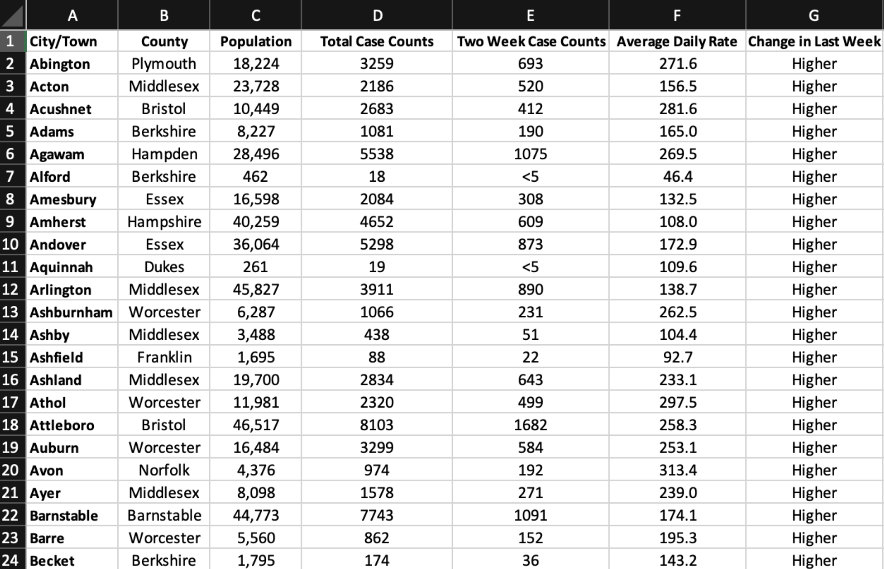
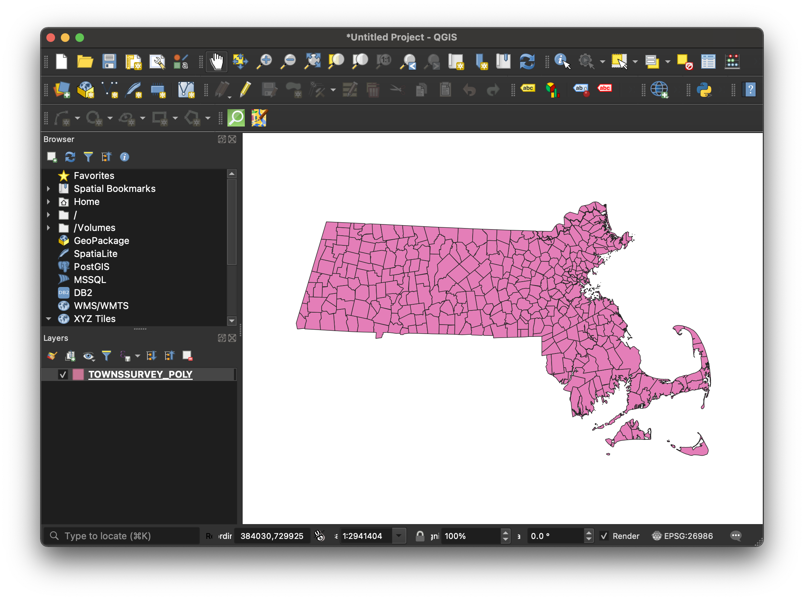
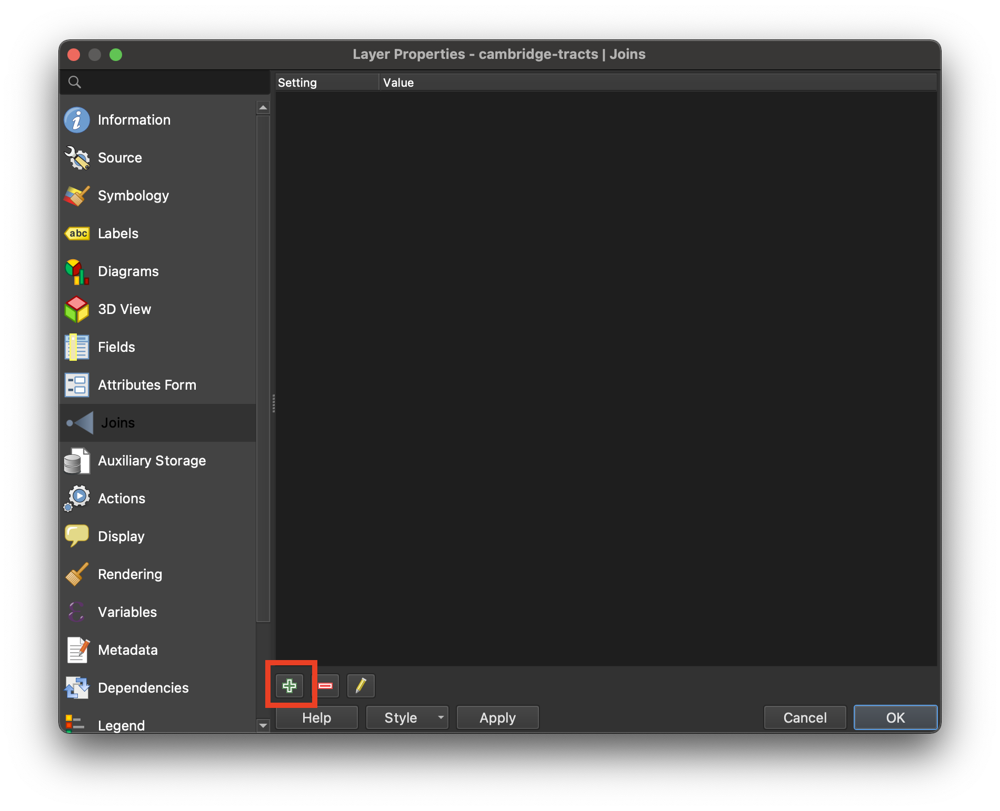

Perform a Table Join in QGIS
Need help turning your spreadsheet data into a map? In this tutorial you will learn how to join tables to GIS shapefiles to create a new, mappable dataset with both geographic boundaries and statistical or attribute information.
Why do we join?
Often, spreadsheets contain useful information we want to map. GIS software, however, does not know how to translate a spreadsheet without any inherent spatial information (such as point coordinates) into a visual map.
Take, for instance, this spreadsheet of weekly COVID rates for each town in Massachusetts for the week of January 26, 2022.

Despite the role of geography in this data –the data is arranged by town– if we were to bring this spreadsheet into a GIS program, the program would not know (without being told by us) which column to interpret as the “geography” to display visually. The formats .csv or .xlsx are not inherently spatial data formats.
On the other hand, take this Massachusetts municipalities dataset which we downloaded from the state government’s open data portal and opened up in a desktop mapping software. The data comes available as a shapefile, which is an inherently geospatial format.

Because this data is spatial, GIS software can recognize it, and automatically make a map out of it.
The image above shows how mapping software displays GIS data, but what does the “data” actually look like? Let’s look at the data’s underlying attribute table.

Here, we can see that for each row, which represents a single GIS feature (in this case, a town), there are some basic facts (each column) about that town. Included here are town name, town ID, population count, etc.
Besides this basic information and the geospatial polygon shapes of the towns, this dataset is not entirely useful for mapping, when it comes to showing any meaningful statistics.
Most of the time, the information we want to map, such as our example COVID rates, are not made available as shapefiles. People publish data in spreadsheets, and in order to make a map, we have to join the spreadsheets together with GIS shapefiles, using a GIS software like QGIS .
 Map of weekly Massachusetts COVID data spreadsheet from January 26, 2022, after being joined to a Massachusetts municipalities shapefile
from MassGIS.
Map of weekly Massachusetts COVID data spreadsheet from January 26, 2022, after being joined to a Massachusetts municipalities shapefile
from MassGIS.
How do joins work?
To perform a join, you must have a column in each dataset which contains the same literal values. Factors such as case sensitivity matter. The values must be exactly the same in both tables for the join to work.
When we joined the COVID spreadsheet to the Massachusetts municipalities shapefile, we used a column common to both datasets: town name. Column headers did not have to match, but the values inside the columns’ cells do.
Step by step
We wrote this tutorial as part of a course called the census data primer . You don’t have to be following the course to use it. You can:
-
reinforce your understanding of joins and download the course data below, so you can follow along step-by-step.
-
use your own data as you read through. If you are new to GIS, your data may need some additional cleaning for it to work. If that’s the case, make an appointment for help via maps@harvard.edu .
Sample data
- Census tracts in Cambridge, MA .
- Tenure statistics .CSV Refer to the tenure codebook to make sense of the statistical files’ structure.
Join steps
-
Add the census tract shapes data to the QGIS document by following these steps .
-
Add the statistical tenure data to the map by following these steps .
-
Right-click the tracts layer in the layer list and select
Properties. -
In the menu, select
Joins. -
In the bottom of the wizard interface, select the green plus sign
Add new joinicon.  -
Set the parameters as follows:
- Join layer: tenure-2019
- Join field: GEOFIPS
- Target field: GEOID
-
Select the checkbox next to
Joined Fields. -
Scroll all the way to the bottom and check off only:
SE_A10060_001,SE_A10060_002, andSE_A10060_003. -
Select
OK. -
Select
Apply. -
Select
OK. -
Right-click the Cambridge tracts layer in the layer list and select
Open Attribute Table. -
Confirm the join worked by scrolling to the far-right of the attribute table and checking that fields
SE_A10060_001,SE_A10060_002, andSE_A10060_003are populated with numerical data.